Difensori
2 Luis Pérez (TD)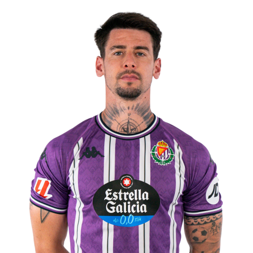
3 David Torres (DC)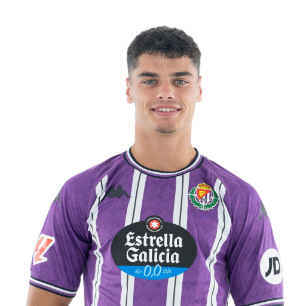
5 Javi Sánchez (DC)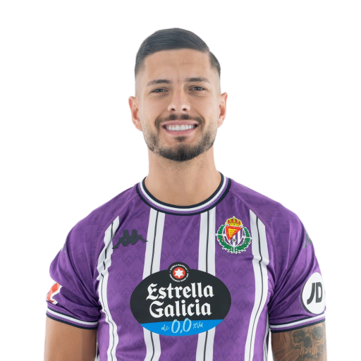
6 Cenk Özkacar (DC)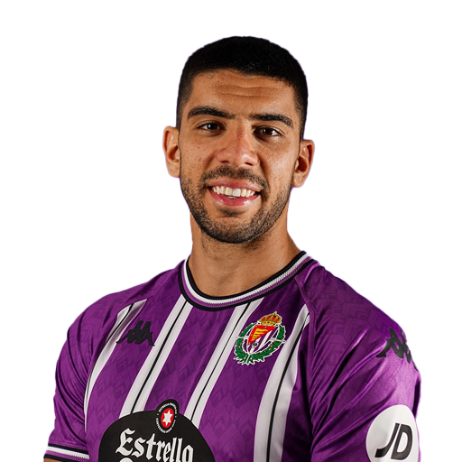
15 Eray Cömert (DC)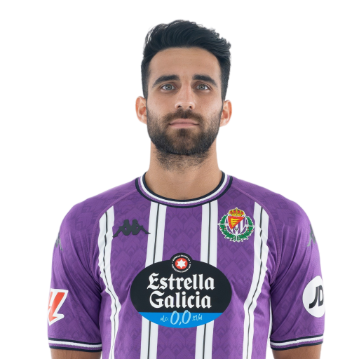
22 Lucas Rosa (TD)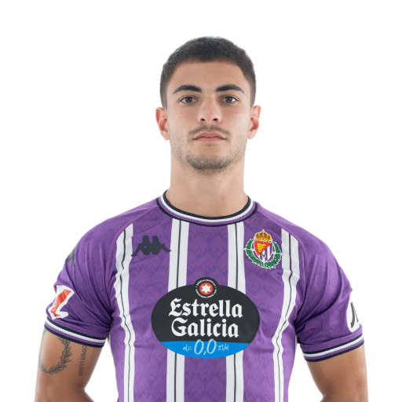
Centrocampisti
4 Víctor Meseguer (CC)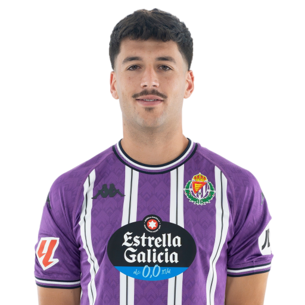
8 Kike Pérez (CC)
12 Mario Martín (CC)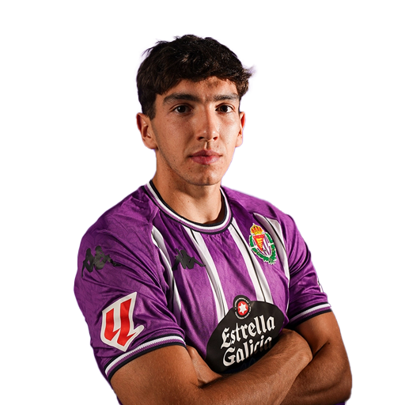
16 César de la Hoz (CC)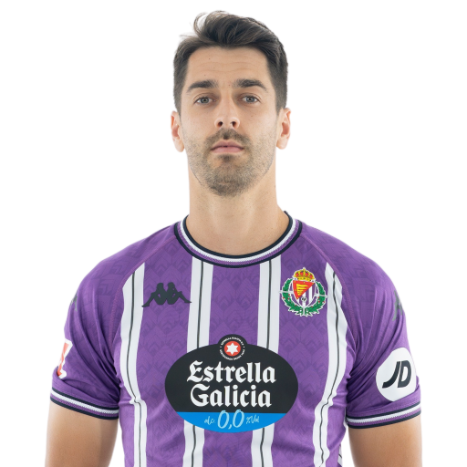
20 Stanko Juric (CC)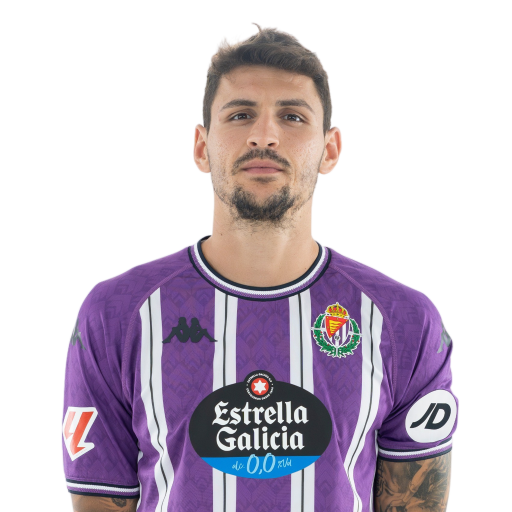
21 Selim Amallah (TQ)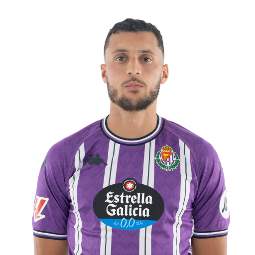
23 Anuar (TQ)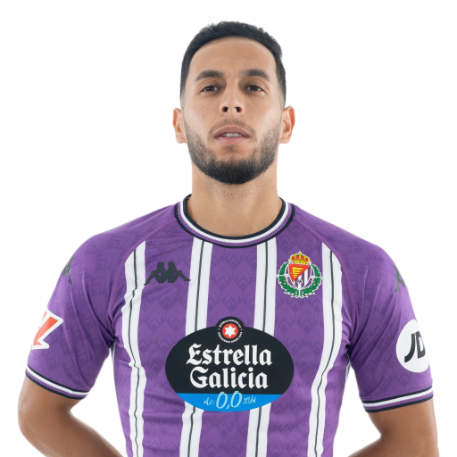
28 Chuki (TQ)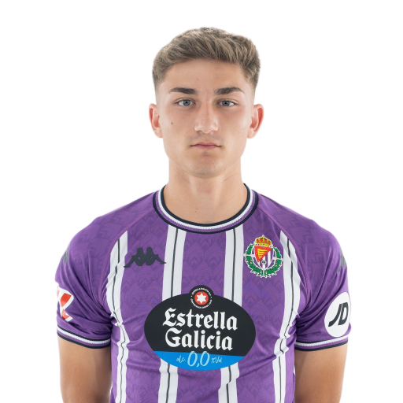
Attaccanti
7 Mamadou Sylla (AT)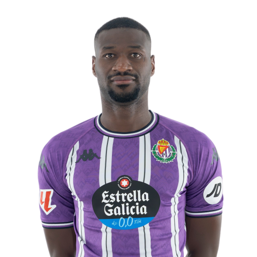
9 Marcos André (AT)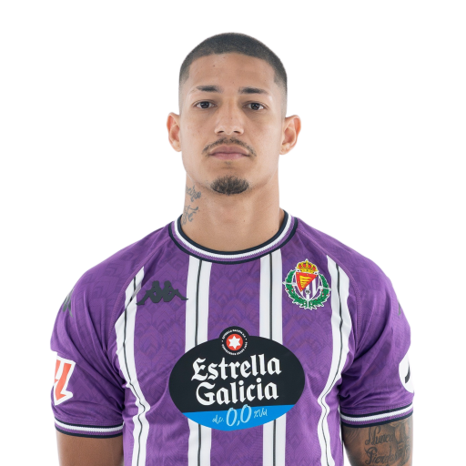
10 Iván Sánchez (AD)
11 Raúl Moro (AS)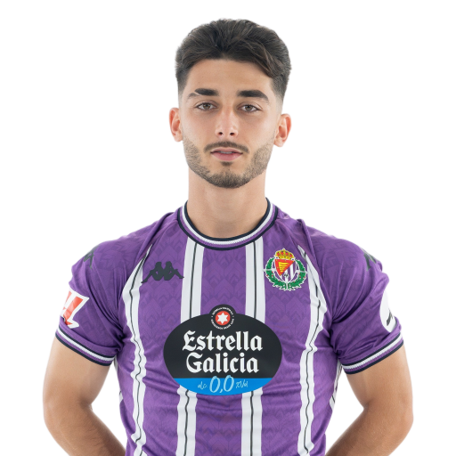
14 Juanmi Latasa (AT)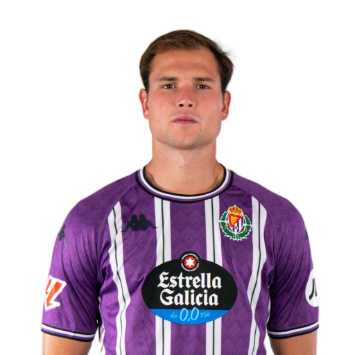
18 Darwin Machís (AS)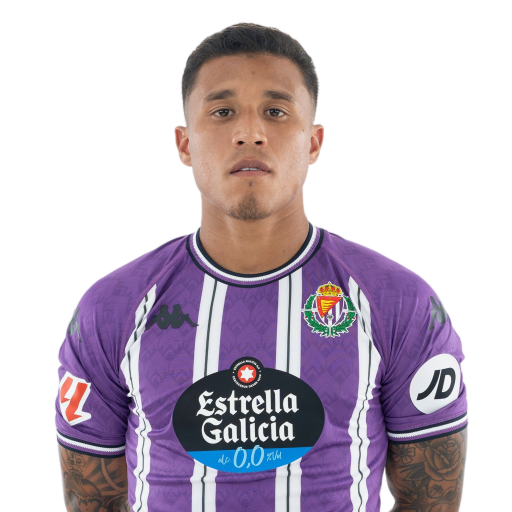
19 Amath Ndiaye (AD)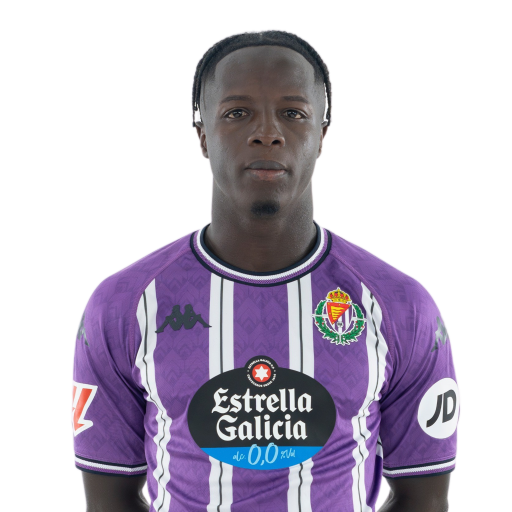
24 Kenedy (AS)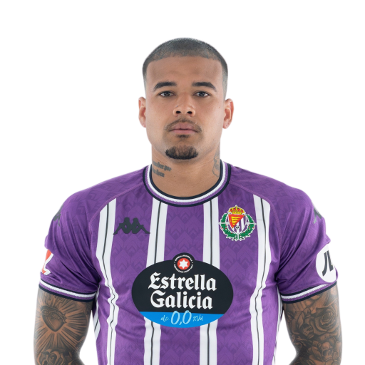